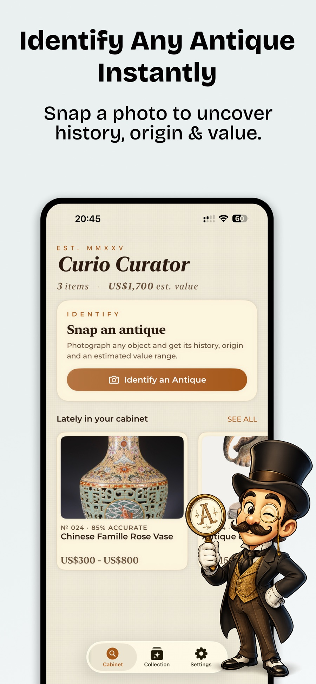

An antique is generally an object at least 100 years old that has value because of its age, craftsmanship or history. “Vintage” and “collectible” pieces are usually younger. Before you can value or sell anything, you need to identify what it actually is — its category, era, origin and maker.
The good news: you don’t need a degree in art history. Almost every antique carries physical clues that tell its story. Work through the five below, in order, and you’ll place most items surprisingly quickly.
1. Look for marks, signatures and hallmarks
The single most valuable clue on most antiques is a mark — a stamp, signature, hallmark or backstamp identifying the maker and often the era. Turn the piece over and check the base, the back, the inside of a lid, or the clasp on jewelry.
- Porcelain and pottery: painted or impressed backstamps under the base.
- Silver and gold: tiny punched hallmarks for metal purity, assay office and date.
- Furniture and clocks: paper labels, branded stamps or a maker’s plaque.
Photograph any mark clearly — it’s often enough to pin down the exact maker and decade.
2. Examine the materials
Materials date an object. Many synthetics didn’t exist before the 20th century, so genuinely old pieces show only natural materials — solid wood, hand-cut glass, natural gemstones, bone, ivory substitutes, real metals. Plastic, plywood, machine-perfect uniformity and modern adhesives suggest a later date or a reproduction.
3. Read the wear and patina
Age leaves honest marks. Look for a soft patina, gentle wear where hands and surfaces touch, oxidation on metal, and settling in wood. Wear should appear where you’d expect it from real use — not evenly “distressed” everywhere, which hints at artificial ageing.
4. Study the style and construction
Every era has a design language — the lines of Georgian, Victorian, Art Nouveau, Art Deco or Mid-Century Modern. Construction matters too: hand-cut dovetails, irregular saw marks and hand-forged nails point to earlier, handmade work; perfectly uniform machining points to mass production.
5. Confirm origin and rarity
Once you have a maker and era, ask how common the piece is. Rarity, condition and demand drive value far more than age alone. Compare your item against similar examples to understand where it sits.
Quick checklist
- Turn it over and find any mark or signature
- Identify the materials — natural or synthetic?
- Check that wear and patina look natural
- Match the style to an era and check the construction
- Compare with similar pieces to gauge rarity

Do it in seconds with Curio
Working through those clues by hand takes practice. Curio does it for you:
- Snap a photo of the item — and a close-up of any mark
- Curio names the item and identifies its category, era, style and likely origin
- You get an authenticity signal, a rarity score and a full identification card in seconds
Frequently asked questions
How old does something have to be to be an antique?
Most dealers use a 100-year threshold for “antique.” Items roughly 20–100 years old are usually called “vintage,” and newer sought-after items are “collectibles.”
Can I identify an antique with just a phone photo?
Yes. A clear, well-lit photo — plus a close-up of any maker’s mark — is enough for Curio to identify most items and estimate a value range.
What if there’s no maker’s mark?
Plenty of genuine antiques are unmarked. Curio still identifies the item from its shape, materials and style, and tells you what a mark would add.